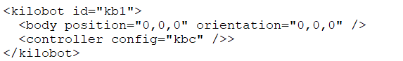
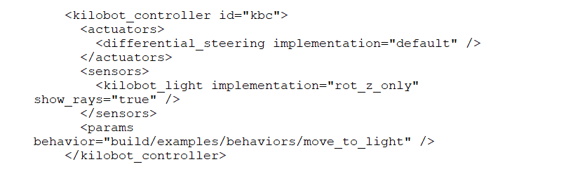

Use an Emulator
Why use an Emulator?
Using an emulator instead of a real kilobot can be a real benefit for your project.
But depending on your case, some disadvantages could be very disabling.
So, to help you choose whether using an emulator or not, here is a non-exhaustive list of Pros, Neutral and Cons
Pros : fact that are at your advantage.
- You can use the emulator wherever you want.
- You are not dependent on the kilobot's battery.
- You are not limited by the amount of your kilobots.
- You are not limited by the integrity problem of your kilobots.
- Testing on an emulator is generally faster than testing on kilobot.
- It is easier to debug the code because you can use
assert.h.
Neutral : Pros or Cons depending in your case.
- You will be in a perfect condition to test.
Cons : fact that are at your disadvantage.
- You have to choose your emulator.
- You have to set up your emulator and its config.
- You have to learn the caracteristique of your emulator and how to use it.
- When your project works in your emulator you have to adapt your code for your kilobots.
Note
This guide only talks about Kilombo and Argos3.
However, you are advised to look for other emulators to find the one that best suits your project.
What Emulator choose
To choose what emulator you will use, you need to know their caracteristiques to compare them.
To learn their caracteristique, you have to read the documentation of the emulator.
But you also have to test the emulator by yourself to see if it's really what you are need.
Here his an example with Kilombo and Argos3:
Warning
The Exemple is based on the Kilombo and Argos3 documentation and my personal experience!
This exemple isn't exhaustive and can be invalided by an update of one of the emulator!
Pleas read the documentation and test by youself before make your choice!
Kilombo
- Architecture
- Single-thread, single process wrapper around kilolib.h
- Robots must run the same behavior
- Global variables cannot be used to contain state
- Models
- Only model offered is the Kilobot
- Motion is kinematics with simple overlap resolution
- Robots cannot push other objects
- Communication neglects obstructions
- Message drop has uniform probability
- Features
- pause button (pause the simulation)
- speed button (button to accelerate or descelerate the simulation)
- possibilities to move the kilobots with the mouse during the simulation
ARGoS
- Architecture
- Multi-thread, multi-process architecture
- Robots can run different behaviors
- Global variables can be used to contain state
- Models
- Models of Kilobot, other robots, boxes, cylinders
- Motion is full 2D dynamics
- Robots can push other objects
- Communication considers obstruction
- Message drop considers local density
- Features
- pause button (pause the simulation)
- select frame button (button to move the simulation frame by frame)
As you can see, although these two are made to emule the kilobots, they didn't make it with the same methods!
So, if you have a project with different code working together, it would be better to use Argos3 because if his multy threading.
But if you have only one code in all your kilobots and that you want to test them in different layout, Kilombo would be better because of his speed and deplacement feature.
What emulator you choose depends of your goal(s)!
How to install an emulator?
Argos3
First install Argos3 version version 3.0.0-beta52 or higher.
Next go where you want to setup your Argos file and in the command terminal use the following command :
mkdir build
cd build
cmake -DCMAKE_BUILD_TYPE=Release ../src
make
sudo make install
Congratulations, you have installed Argos3-Kilobot!
You can test your installation by launching a preinstalled project.
To do it, go to the file where you installed the build and the src and use in the terminal :
argos3 -c src/examples/experiments/kilobot_orbit.argos
Warning
Since each emulator needs a specific installation, this explanation only concerne Argos3.
To know more about the installation of your emulator, read the documentation or the readme.md / readme.txt
How to Use an emulator?
Argos3
To add a new project follow the next steps:
Go to the file src/example/behaviors.
Place your .C here and add his name in the CMakeLists.txt like this add_executable(FileName FileName.c.
Next return in src/example and place your config file.
Execute the command make in src/.
When the build is over execute the command argos3 -c examples/experiments/NameConfigFile.argos
And that is all!
Now a new window would be open. You just have to start the emulation with the button start
Warning
Each emulator works with his own rules.
To know them, you can read the documentation but you must above all make a lot of effort.
Setup you Config file
When you use an emulator you need to choose the placement of your kilobot.
For this we use a config file.
In this section you will learn how to set up this config file for your emulator.
Argos3
Copy and paste a pre-existing config file in src/examples/experiments/.
Rename the copy by the name of your program.
Next open the file and go the " Arena Configuration " section
Normally, in the <arena> balise there is this :

This represents the placement of one kilobot.
For each kilobot you want to add you have to :
- change his id
<kilobot id="kb1">( each id must be unique) - change his position and orientation
<body position="0,0,0" orientation="0,0,0" />(two kilobot can not be at the same placement). - choose the program that you want it to do
<controller config="kbc" />>.
Next go to the " Controllers" section.
Normally, in the <controllers> balise there is this :

For each different program you want to use you have to :
- setup his name
<kilobot_controller id="kbc"> - change his path
behavior="build/examples/behaviors/move_to_light" />
That is all!
Note
I advise you to develop a program if you want to make your tests with a lot of kilobot. Especially if you want to make geometrical form.